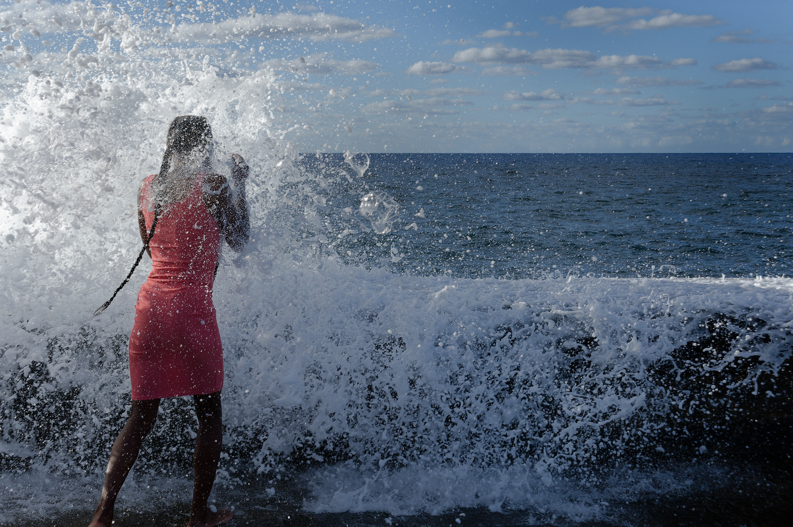
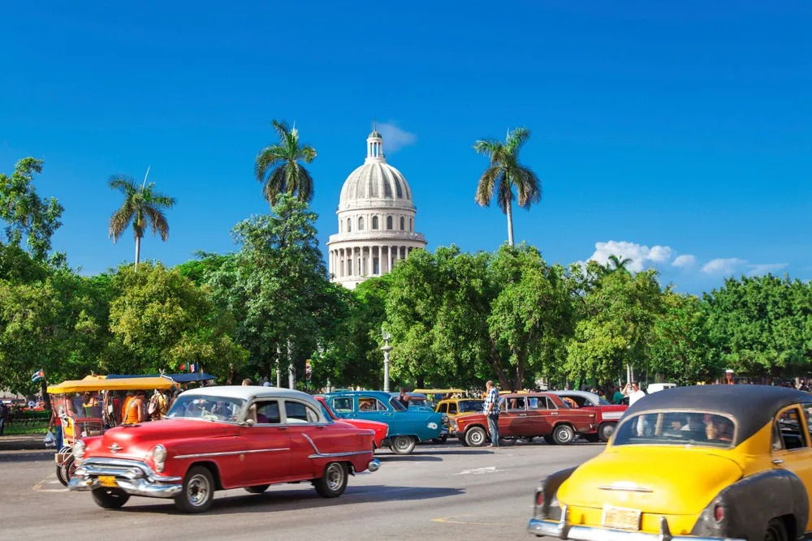
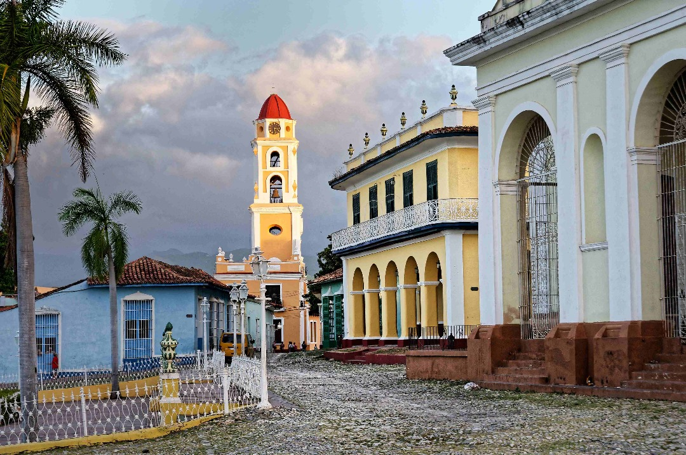
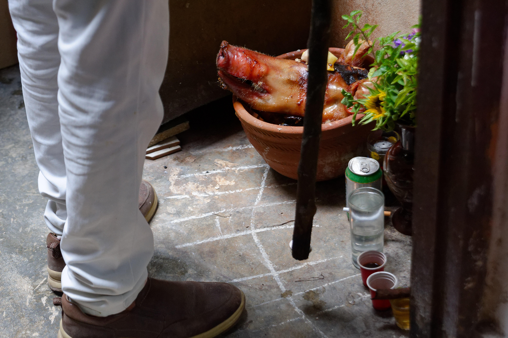
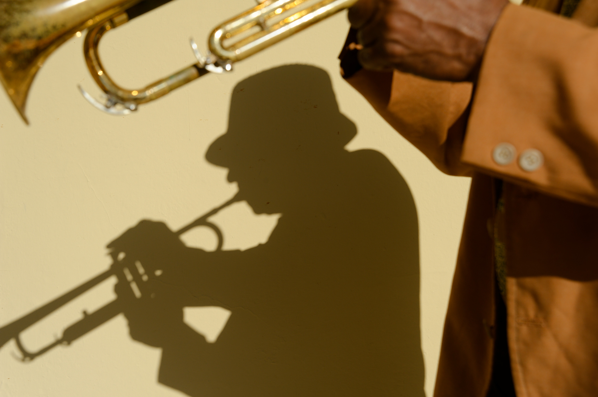
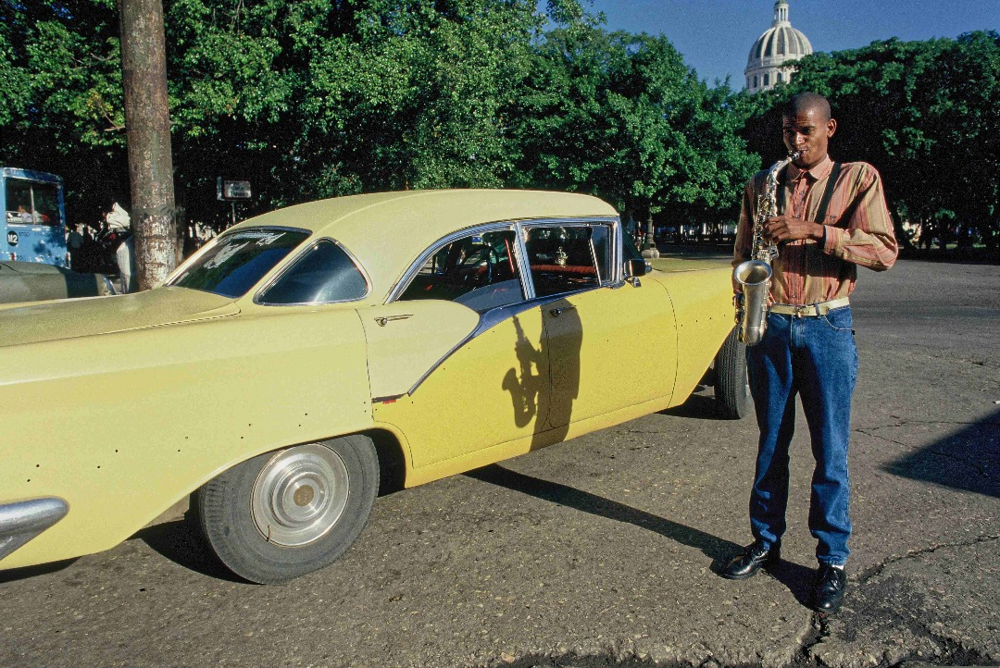
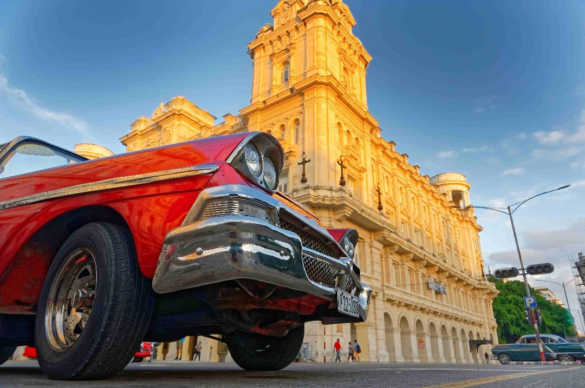

IDÉE VOYAGE EN PETIT GROUPE
Cuba
Stage de Photos · La Havane & Trinidad
📷 Avec Jean-Marc Gauthier
🏛️ Vieille Havane & Vedado
🌆 Malecón & Trinidad UNESCO
🎯 5 thèmes photographiques
Ateliers pratiques · Sorties guidées · Places limitées
vpdvoyages.com

📷 LE STAGE
Stage intensif de photographie entre La Havane et Trinidad. Perfectionnez votre art avec Jean-Marc Gauthier, photographe : vieilles voitures américaines, rythmes de la salsa, façades colorées UNESCO, couchers de soleil sur le Malecón. Ateliers pratiques, conseils personnalisés et sorties guidées.
🏛️ La Havane · Vedado
🏛️ Trinidad UNESCO
🎯 Ateliers thématiques
📷 Reflex ou hybride
👨🏫 LE FORMATEUR Jean-Marc Gauthier
Photographe-réalisateur multi-images. 40 ans de parcours jalonné d'expériences singulières : milieux subaquatiques et aériens, portraits de Caroline de Monaco, Cuba, Venezuela, Congo, Vietnam… Accepté par les Inuits du Groenland (2 ans) et les Indiens Cri de la baie de James.
« Je ne fais pas de photos dispersées. Elles ont toutes un lien. » – créateur d'histoires en images.
Portraits croisés
Graphisme mural & texture
Impressions d'autoportrait
Nus et charmes
Odyssées nocturnes

📅 PROGRAMME 1ère semaine – La Havane
Jour 1 Vol vers Cuba
Jour 2 Arrivée & Vedado · Balade Malecón · Coucher de soleil · Briefing stage
Jour 3 Vieille Havane · Plaza de Armas · Obispo, Capitole · Voitures vintage · Atelier portraits
Jour 4 Lumière & rues · Centro Habana · Graphisme mural · Marchés · Retour sur images
Jour 5 Panoramique · Place Révolution · Morro/Cabaña · Playas del Este · Golden hour
Jour 6 Vie quotidienne · Quartiers populaires · Scènes de rue · Atelier thématique · Soirée musique
Jour 7 Nocturne · Odyssées nocturnes · Malecón de nuit · Néons & ambiances · Revue de portfolio
Jour 8 Libre / transfert · Matin libre ou shooting perso · Route vers Trinidad

📅 PROGRAMME 2ème semaine – Trinidad & retour
Jour 9 Trinidad · Plaza Mayor · Façades colorées · Ruelles pavées · Lumière coloniale
Jour 10 Marchés & vie · Marché local · Portraits habitants · Atelier texture · Casa de la Trova
Jour 11 Valle de los Ingenios · Tour Iznaga · Paysages canne · Shooting nature · Retour Trinidad
Jour 12 Plage & golden · Playa Ancón · Couleurs Caraïbes · Contre-jour · Revue images
Jour 13 Retour Havane · Route vers Havane · Arrêt libre · Installation · Soirée détente
Jour 14 Portfolio · Sélection finale · Retouches guidées · Présentation groupe · Bilan stage
Jour 15 Départ · Temps libre · Transfert aéroport · Vol retour

🎯 5 THÈMES PHOTOGRAPHIQUES
1. Portraits croisés Rencontres, regards, complicités – saisir l'humain au quotidien
2. Graphisme mural Textures, façades, affiches, ombres et géométries urbaines
3. Autoportrait Impressions de soi dans le décor cubain – présence et mise en scène
4. Nus & charmes Esthétique du corps, lumière naturelle, suggestion et élégance
5. Odyssées nocturnes Malecón de nuit, néons, ambiances, longue pose et atmosphère

📍 LIEUX DE SHOOTING
Vieille Havane Plazas, Capitole, voitures vintage, rues piétonnes
Malecón Couchers de soleil, pêcheurs, horizon caraïbe
Vedado & Centro Architecture, néons, vie de quartier
Trinidad UNESCO Façades pastels, pavés, Plaza Mayor
Vallée de los Ingenios Tour Iznaga, canne à sucre, horizons
Playa Ancón Mer des Caraïbes, lumière marine
🛂 AVANT LE DÉPART
- Passeport valable 6 mois après retour, numérisation + photocopie
- Carte de tourisme (visa) à obtenir avant le départ
- Formulaire D'Viajeros à remplir en ligne avant l'arrivée
- Assurance santé obligatoire (attestation via carte Visa) – 155 000 € frais médicaux, rapatriement 24/7
💵 ARGENT & PRATIQUE
Monnaie Pesos cubains (CUP) – Change en banque ou Cadeca. Pas à l'aéroport ni dans la rue.
Matériel photo Reflex ou hybride. Cartes mémoire, batteries de rechange, protection pluie/poussière. Trépied léger pour le nocturne.
Prises US (double plat) 110/220 V – adaptateur recommandé
Chaussures Bonnes chaussures pour Vieille Havane et Trinidad (pavés)
Sécurité Cuba = pays le plus sécuritaire d'Amérique latine. Règles de bon sens le soir. Copie du passeport.



Cuba… en photos !
Stage avec Jean-Marc Gauthier
La Havane · Trinidad · Places limitées
📷 stage photo
🏛️ Trinidad UNESCO
Cuba
Photos : dossier images/ · Cuba Stage de Photos – La Havane & Trinidad